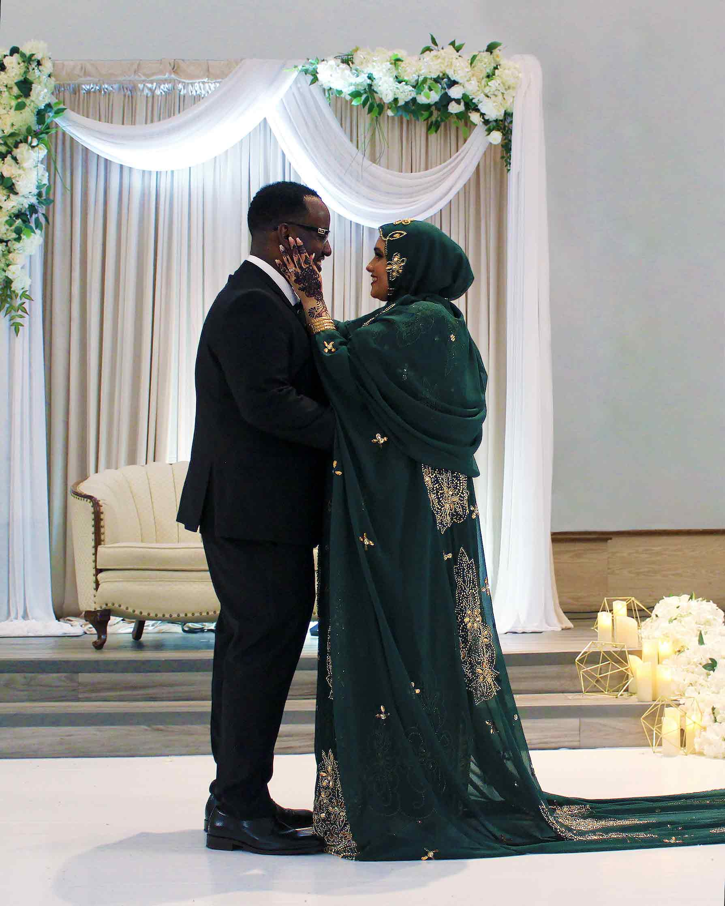
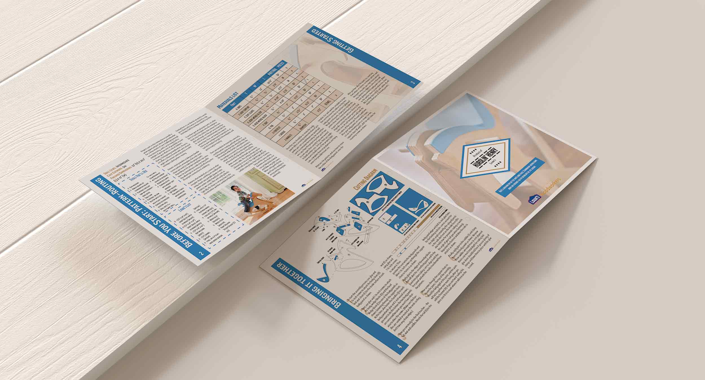
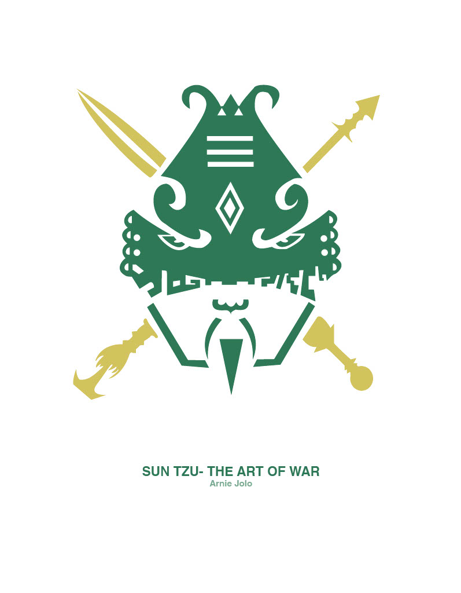
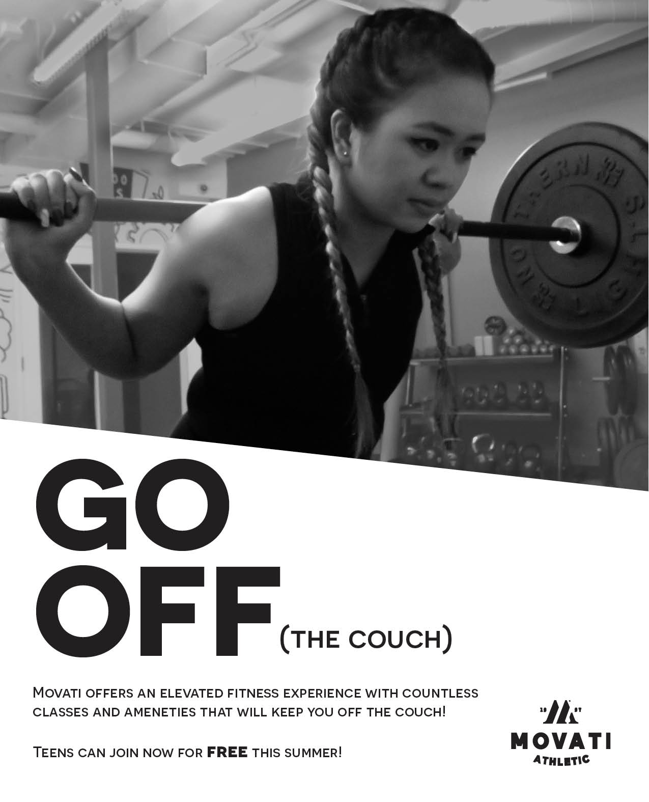

Photography

We specialize specifically in portrait and wedding photography. Clients are able to request edited and non edited versions of the photos. Locations for photo printing can also be disclosed on the request of the client.
This image is part of a bigger set of photos taken at a Palestinian-Somali wedding. This version has been edited and printed.
Publication

We are well-rounded in design for different types of publications from books, newsletters, infographics and manuals.
Hurdlin’ Henry is a manual that was made for a rocking horse sold at Lowe’s. The objective of the manual was to be clear and concise with imagery and layout while having a playfulness as it is a toy targeted to young children.
Illustration

Illustration is a big part of our design process, and we include our original illustrations as much as possible.
This logo of Sun Tzu started off with research, sketches and an idea of how to incorporate the timely era that Sun Tzu lived in.
Branding

Branding is our last main component of the company. We love finding news ways to promote different ideas for companies in a compelling way.
MOVATI was our recent campaign where MOVATI wanted to promote free summer memberships to teens.